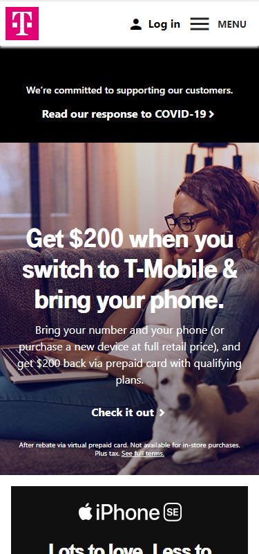
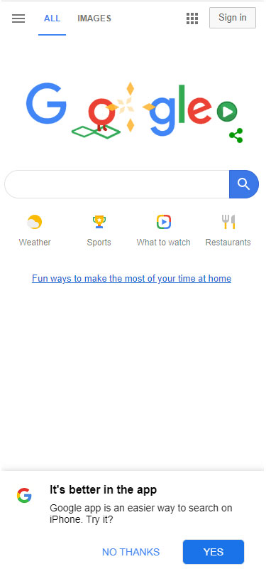

Design Principles
Trenton South
PARC: Contrast
T-Mobile

T-Mobile's website is an excellent example of using high contrast elements. Their purple logo really pops against the white background. The use of black and white
make it easy and comfortable to read. They both have black font on white background and white font on black background. As a second point, their white font on
the image is not good contrast in my opinion.
Fitt's Law
GoDaddy

There are three large white areas on GoDaddy's page. The search box and the two call to action buttons. These are the first thing noticeable on the webpage.
They are equally dispersed across the page and the user's finger can easily maneuver to these large areas. This is a good use of Fitt's Law to make sure
the main functions of the page are easily accessible.
White Space & Clean Design
Google

Google has got to be the de facto standard when it comes to the use of white space. Their home page is nothing but the main search area and a handful of links.
The design is clean and uncluttered and is very visually appealing. The only thing that I found distracting was their prompt to use their mobile app. When you hit
"NO THANKS", the view is even cleaner.